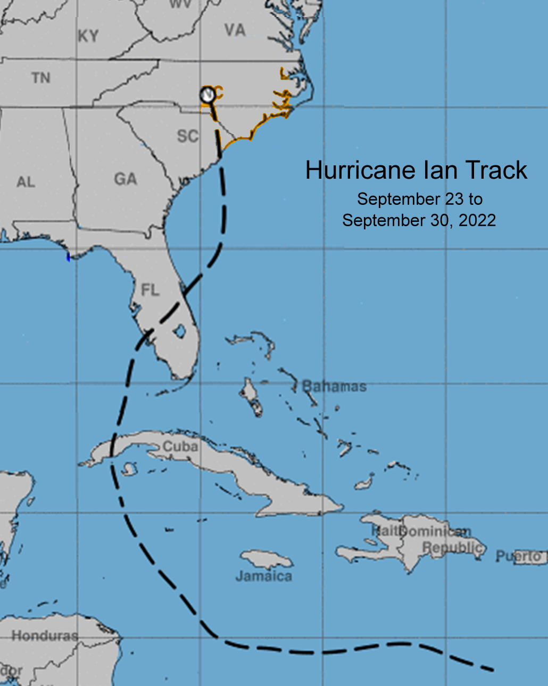
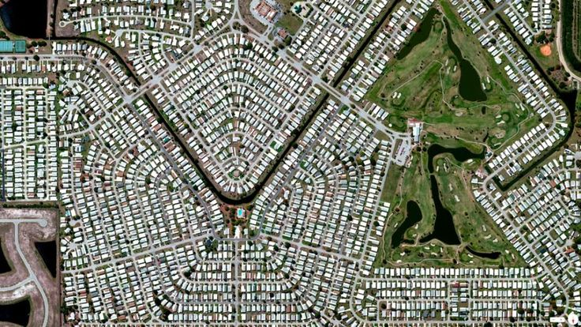
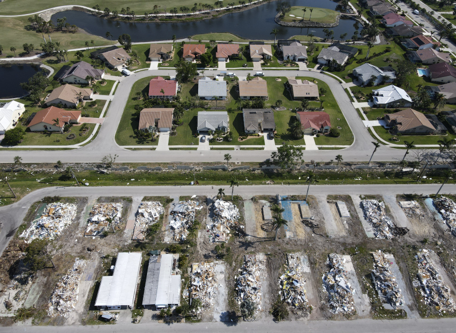
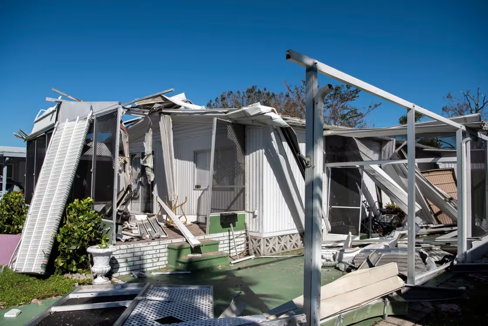
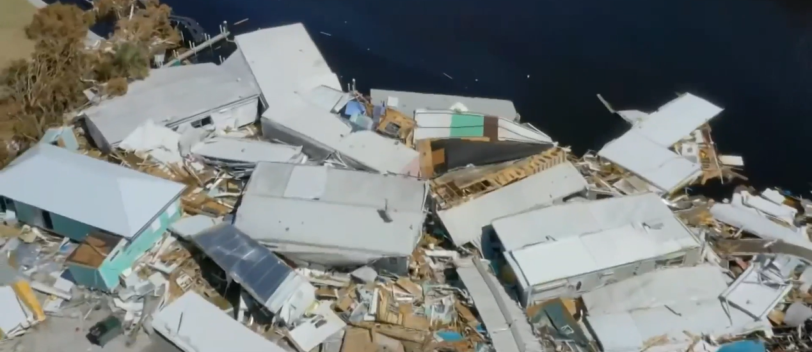
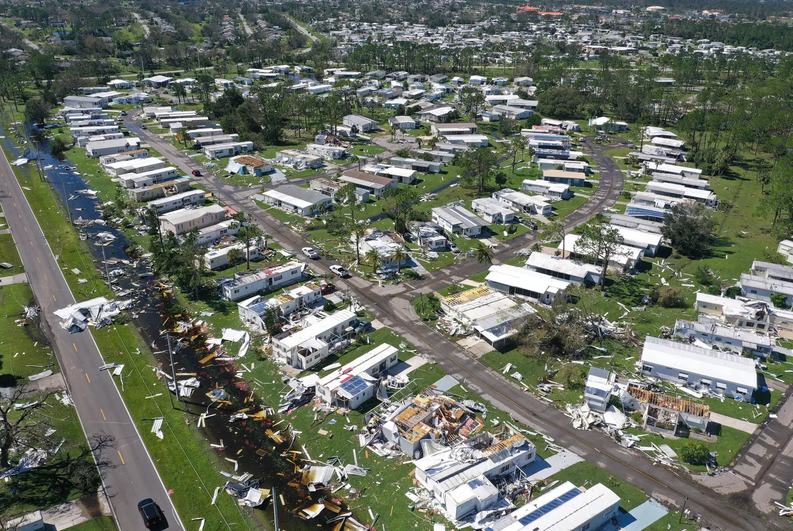
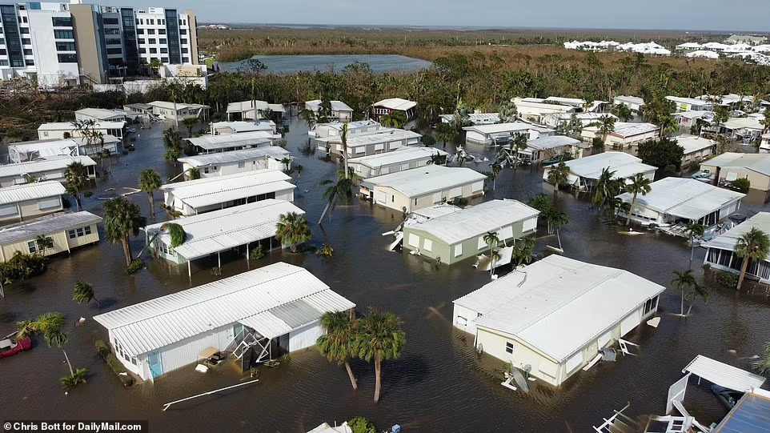
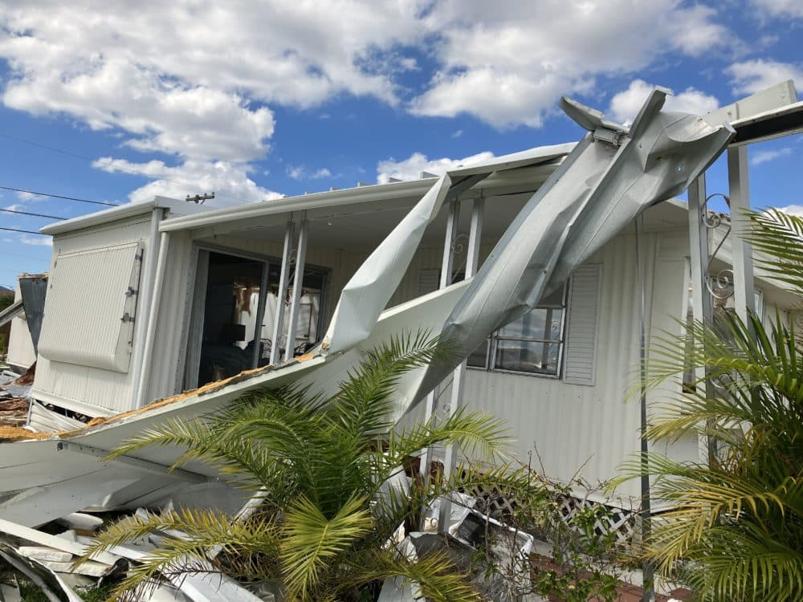

The state of Florida has a long history of experiencing devastating hurricanes due to its geographic position. The state's pennisula juts out into the Atlantic Ocean and Gulf of Mexico, towards the Tropic of Cancer. It is here, near the tropics and over warm waters that hurricanes are most likely to form. As these storms pass over Florida, the state is subject to coastal surges, heavy rain, and winds that can reach over 155 miles per hour. As the Earth and its oceans become warmer with climate change, major hurricanes, hurricanes Category 3 and above, are becoming more common in the Gulf. The warmer air and sea temperatures create conditions in which hurricanes are more likely to form. In the past 10 years, 8 major hurricanes and made landfall in the Southeastern United States, 4 of which hit the coast of Florida. It is not just volume of storms that the state should worry about, but the strength and speed of them. The higher volumes of warm waters cause the storms to grow bigger than they have in the past and take much longer to dissapate after they make land fall.
We witnesses the devastating effects of strong hurricanes in Florida recently. In 2022, Hurricane Ian developed in the Caribbean Sea and reached Category 4 as it hit the western coast of Florida and travelled northeast across the state. Ian was recorded to have a 75 mile wind field along its eye's track with sustained winds reaching over 74 miles an hour with wind gusts well over 100 miles an hour. Category 4 hurricanes can produce winds up to 155 miles an hour. Ian was the costliest natural disaster of 2022, causing a reported 112.9 billion dollars in damage. That's the third costliest hurricane since 1980.
NOAA, Hurricane Ian Track
The congregation of trailer homes in Florida dates back to the establishment of manufacturing plants during World War II. Workers could move closer to plants and live in small, cheap housing in the form of mobile homes/trailers. Mobile home "resorts" of the 1960s started to attract retirees from across the U.S. with promises of warm weather and amenities like pools and club houses. Today, mobile home parks provide low-cost housing, more mobilty, a sense of community, more housing in highly-sought after cities and towns, and the opportunity to own a home.
Barefoot Bay, Florida
The quality of life with a relatively lower cost of living and an escape from harsh winters continues to attract retirees and 'snowbirds.' But these benefits are starting to come at a cost. With the recent surge in strong, slow-moving hurricanes, senior citizens and low-income families who live in mobile homes, specifically mobile parks, are at the highest risk of complete devastation. This is not just a weather problem, it is a social and economic problem. Climate change is having a disproportionate effect on people in poverty and people, like retirees, with no active income. Their homes are at risk of being, and frenquently are, completely wiped away by major hurricanes. For example, Fort Myers Beach, Florida may have experienced the worst devastation during Hurricane Ian. A 15-foot storm surge rushed onto the coast causing 150 deaths and all kinds of older homes, especially mobile ones in places like Fort Myers Trailer Park and Poinsetta Mobile Home Park. Newer brick-and-mortar homes fared the storm amazingly well, on the other hand. Thus, in the coming decades, as Florida experiences more and more major hurricanes, climate change is posing a severely disproportionate, deadly risk to economically disadvantaged Floridians.
Photo taken after Ian highlighting disproportionate affects of storm on mobile homes
The deadliest symptom of a hurricane is not pelting rain or flooding, but winds. Extreme wind speeds tear apart the thin metal and wooden exteriors of mobile homes and cause storm surges dozens of feet tall that pull homes right off of their foundations. So, for my map, how many mobile home parks were at risk during or fell victim to Hurricane Ian's strongest wind field. Further, how many of these parks would be at risk in the event of an even stronger hurricane that could follow a similar path.
As Hurricane Ian's Eye hit the coast of Florida on September 28th at Category 4 intensity, a 15 foot surge of water and 120 mile an hour winds hit Fort Myers and its surrounding towns. Poinsettia Mobile Home Park, comprised of 322 homes, suffered severe devastation. One owner admits "[The homes] are not built to survive the kind of punishment that Hurricane Ian dished out."
 NBC News, 'Hurricane Ian wrecked mobile home park but spared another across the street'Just 30 miles south of Ian's point of landfall, Bonita Springs Florida was nearly leveled by the Category 4 winds. Almost all of the homes in this park were swept off of their foundations and pushed towards an adjacent channel.
 NBC Miami, 'Bonita Springs family among many who lost everything in Ian'Holiday Park is located near Sarasota, over one hundred miles from Ian's landfall point. Still, this park, home to hundreds of retirees, was rattled and pulled apart by Ian.
 Herald Tribune, 'Hundreds of homes in North Port community destroyed by Hurricane Ian'One lesser known, but just as deadly, symptom of a hurricane is the formation of tornadoes. Sunshine Village mobile homes experienced multiple along the outskirts of the storm over the span of several hours in the early morning of September 28th.
 CBS News, 'Davie mobile home park damaged by possible tornado'Almost all of the 240 homes in Mobile Gardens were destroyed when Hurricane Ian made landfall. One large problem with owning a mobile home in Florida and its frequent hurricanes is that the homes are nearly impossible to insure. Many home owners are forced to rebuild again and again out-of-pocket.
 Boston NPR, 'One resident in Englewood wants questions answered before rebuilding from Hurricane Ian'*Analysis of my map here* Include number of parks affected in each wind field and general conclusions
'Hurricanes in Florida,' Florida Center for Instructional Technology
'Hurricane Ian: Wind Field,' WeatherStem, NOAA Data 'Hurricane Ian ranks as the costliest natual disaster in USA during 2022,' Fox News 4 'Hurricane Ian highlighted the vulnerabilities of older mobile homes,' NPR 'A History of Mobile Home Resorts in Florida,' Four Star Homes Blog 'Hurricane Ian wrecked a mobile home park...' NBC News 'After Hurricane Ian, Fort Myers Beach struggles to become 'a functional paradise,'' NPR 'Struggles continue for thousands in Florida 8 months after Hurricane Ian as new storm season looms,' The Columbian